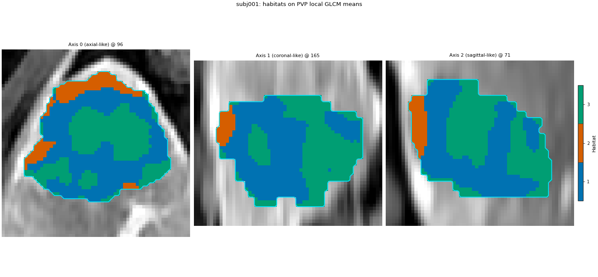
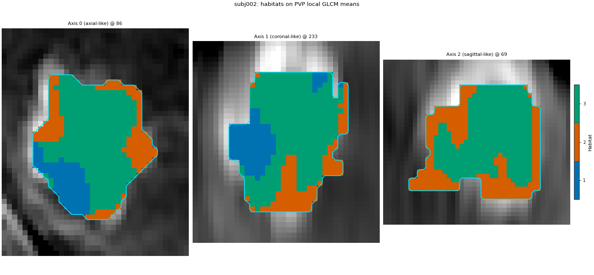
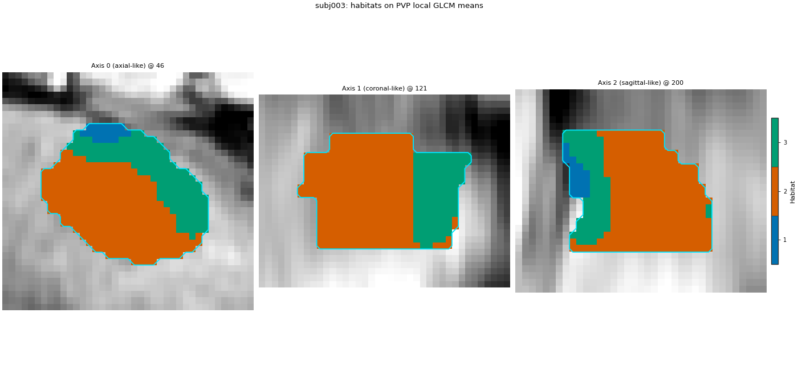
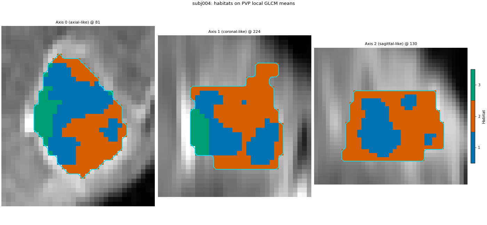
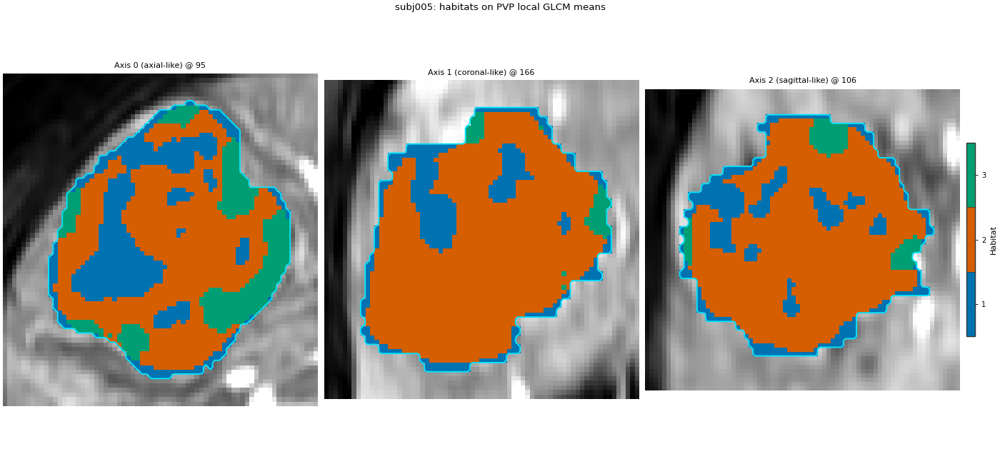
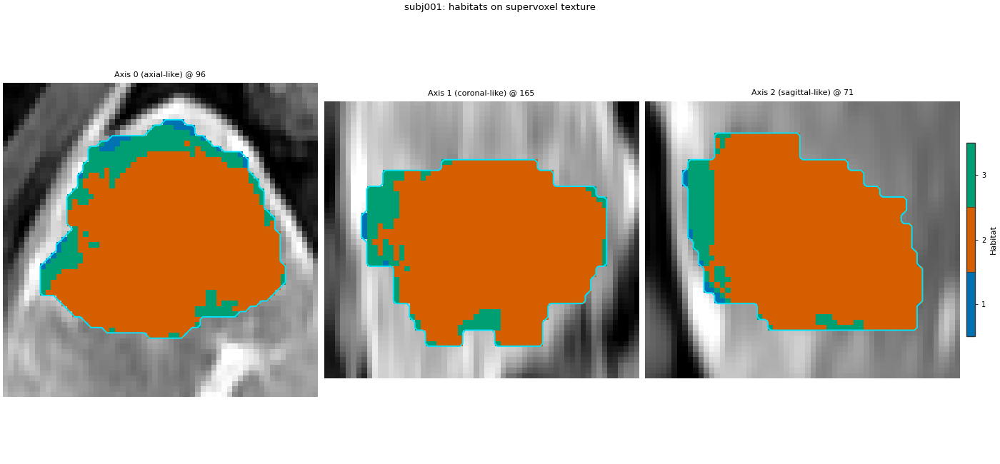
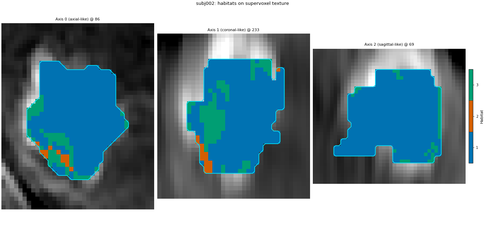
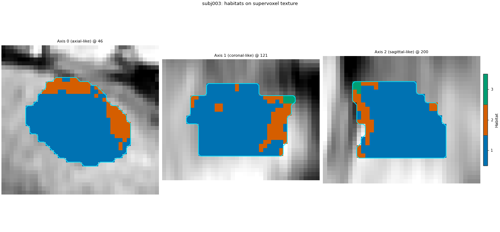
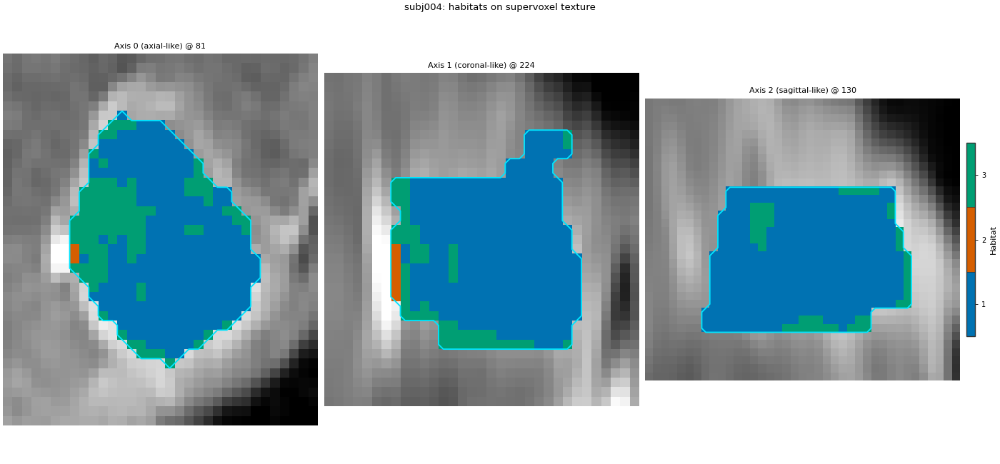
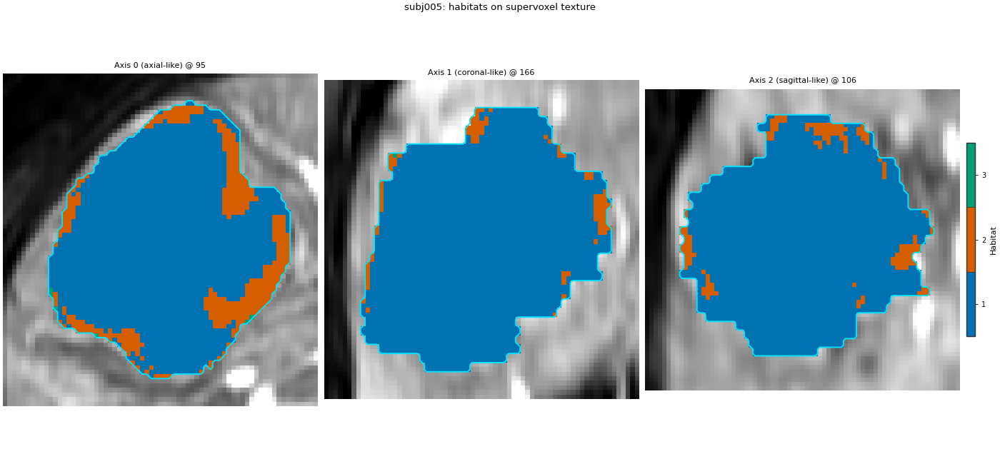

备注
Go to the end to download the full example code.
Supervoxels inside each subject, from components#
Background. Supervoxels inside each subject declares
this analysis as a HabitatSpec. The same objects
exist one step at a time: a voxel extractor, a subject-level
normaliser, a supervoxelizer, a supervoxel-feature extractor, a
habitat fitter and an assigner.
Purpose. On the same five demo patients, build both habitat maps
without Study, then run Study and check that every voxel label
matches. The mean-path voxel table is only PVP local GLCM Contrast and
JointEntropy (kernel radius 3, bin width 12). The region-radiomics path
still cuts from four-phase intensity plus that PVP GLCM, then measures
whole-patch PyRadiomics on the four original phases (no kernel).
When to use. When one of these steps has to sit inside your own
loop. For a normal study, Study is shorter and records the manifest.
Load the five demo patients#
将 DATA / MODALITIES / ROI 更改为您预处理的布局。sphinx_gallery_thumbnail_number = 1
from pathlib import Path
import matplotlib.pyplot as plt
import numpy as np
from habit.contracts import cohort_from_directory
from habit.datasets import fetch_demo
from habit.feature_preprocessing import Impute, SubjectPreprocessingChain, Winsorizing, ZScoreScaling
from habit.habitat_features import HabitatVolumeFeatures
from habit.habitat_model import KMeansHabitatModelFitter
from habit.recipes import Study
from habit.spec import HabitatSpec, Spec, Stage
from habit.supervoxel import KMeansSupervoxelizer, SupervoxelRadiomicsFeatures
from habit.viz import plot_habitat_overlay
from habit.voxel_features import ConcatVoxelFeatures, VoxelRadiomicsFeatures
DATA = fetch_demo()
MODALITIES = ("pre_contrast", "LAP", "PVP", "delay_3min")
ROI = "LAP"
cohort = cohort_from_directory(DATA, modalities=MODALITIES, roi=ROI)
print(cohort)
Path("out").mkdir(exist_ok=True)
# PVP voxel texture only: two GLCM features in a 7x7x7 neighbourhood.
# Not the bundled full voxel radiomics preset; no first-order block.
voxel_texture_params = {
"imageType": {"Original": {}},
"featureClass": {"glcm": ["Contrast", "JointEntropy"]},
"setting": {"binWidth": 12.0, "normalize": False},
}
# Whole-supervoxel radiomics on the four original phases (no kernel).
region_radiomics_params = {
"imageType": {"Original": {}},
"featureClass": {
"firstorder": ["Mean", "Variance"],
"glcm": ["Contrast", "JointEntropy"],
},
"setting": {"binWidth": 12.0, "normalize": False},
}
# Mean path: PVP local GLCM only (same params dict as the Study Spec).
extractor = VoxelRadiomicsFeatures(
modality="PVP",
roi=ROI,
kernel_radius=3,
params=voxel_texture_params,
)
# Region-path cut only: four-phase intensity plus the same PVP GLCM.
region_cut_extractor = ConcatVoxelFeatures(
extractors=[
{"name": "raw", "params": {"modalities": list(MODALITIES)}},
{
"name": "voxel_radiomics",
"params": {
"modality": "PVP",
"kernel_radius": 3,
"params": voxel_texture_params,
},
},
],
roi=ROI,
)
# Per patient, before the cut. Imputation is inserted at the front of
# the chain so a non-finite voxel cannot reach k-means.
voxel_chain = SubjectPreprocessingChain(
[Winsorizing(winsor_limits=(0.01, 0.01)), ZScoreScaling()]
)
# 150 supervoxels from the PVP local GLCM profile (mean path).
# k-means here does not use voxel coordinates.
partitioner = KMeansSupervoxelizer(n_supervoxels=150, n_init=3)
partitioner.set_random_state(0)
# Fixed K. A new fitter per patient keeps one patient's centres from
# leaking into the next call.
volume = HabitatVolumeFeatures()
def habitat_fitter() -> KMeansHabitatModelFitter:
"""Return a seeded 3-habitat k-means fitter.
Returns:
Fitter with ``n_habitats=3`` and ``n_init=10``. The seed matches
``HabitatSpec(random_seed=0)`` on the Study page.
"""
fitter = KMeansHabitatModelFitter(n_habitats=3, n_init=10)
fitter.set_random_state(0)
return fitter
HABIT demo data (cached)
DATA (preprocessed root): C:\Users\dongm\.habit_data\demo-data-v1\preprocessed
On-disk inventory of this folder:
subjects (5): subj001, subj002, subj003, subj004, subj005
image series: LAP, PVP, delay_3min, pre_contrast
mask keys: LAP, PVP, delay_3min, pre_contrast
example image: images/subj001/delay_3min/WATER__BH_Ax_LAVA_Flex_3min_Series0012.nrrd
example mask: masks/subj001/delay_3min/WATER__BH_Ax_LAVA_Flex_10min_Series0017_mask.nrrd
Your own data must use the same folder tree (change IDs / series names):
DATA/
images/<subject_id>/<modality>/<one image file>
masks/<subject_id>/<roi>/<one mask file>
Then load it with the same call the demos use:
cohort = cohort_from_directory(DATA, modalities=("LAP",), roi="LAP")
Swap DATA / modalities / roi to match your tree. Mask key is often the
same as one image series (here LAP).
Cohort(5 subjects [subj001, subj002, subj003, subj004, subj005])
Means: one patient at a time#
The supervoxelizer stores the mean of the normalized PVP GLCM columns
on each supervoxel. That table is what the habitat model clusters.
There is no pool and no second patient in fit.
mean_maps = []
mean_rows = []
for subject in cohort:
field = extractor(subject)
print(
subject.subject_id,
"voxel columns",
field.values.shape[1],
)
field = field.with_feature_frame(
voxel_chain(field.feature_frame()),
produced_by="feature_preprocessing.subject.voxel",
spec_fingerprint=voxel_chain.spec.fingerprint(),
)
units = partitioner(field)
model = habitat_fitter().fit([units])
habitat_map = model.assigner("nearest_centroid")(units)
mean_maps.append(habitat_map)
mean_rows.append(volume(subject, habitat_map).frame)
print(subject.subject_id, "supervoxels", len(units.features), "K", model.n_habitats)
voxel_radiomics: glcm batch 1/35 0.247s peak=53MiB
voxel_radiomics: glcm batch 2/35 0.063s peak=54MiB
voxel_radiomics: glcm batch 3/35 0.058s peak=55MiB
voxel_radiomics: glcm batch 4/35 0.060s peak=56MiB
voxel_radiomics: glcm batch 5/35 0.061s peak=58MiB
voxel_radiomics: glcm batch 6/35 0.061s peak=59MiB
voxel_radiomics: glcm batch 7/35 0.062s peak=60MiB
voxel_radiomics: glcm batch 8/35 0.059s peak=61MiB
voxel_radiomics: glcm batch 9/35 0.058s peak=62MiB
voxel_radiomics: glcm batch 10/35 0.062s peak=63MiB
voxel_radiomics: glcm batch 11/35 0.063s peak=65MiB
voxel_radiomics: glcm batch 12/35 0.067s peak=66MiB
voxel_radiomics: glcm batch 13/35 0.067s peak=67MiB
voxel_radiomics: glcm batch 14/35 0.064s peak=68MiB
voxel_radiomics: glcm batch 15/35 0.061s peak=69MiB
voxel_radiomics: glcm batch 16/35 0.062s peak=70MiB
voxel_radiomics: glcm batch 17/35 0.062s peak=71MiB
voxel_radiomics: glcm batch 18/35 0.063s peak=73MiB
voxel_radiomics: glcm batch 19/35 0.057s peak=74MiB
voxel_radiomics: glcm batch 20/35 0.064s peak=75MiB
voxel_radiomics: glcm batch 21/35 0.066s peak=76MiB
voxel_radiomics: glcm batch 22/35 0.061s peak=77MiB
voxel_radiomics: glcm batch 23/35 0.061s peak=78MiB
voxel_radiomics: glcm batch 24/35 0.070s peak=79MiB
voxel_radiomics: glcm batch 25/35 0.065s peak=81MiB
voxel_radiomics: glcm batch 26/35 0.066s peak=82MiB
voxel_radiomics: glcm batch 27/35 0.064s peak=83MiB
voxel_radiomics: glcm batch 28/35 0.067s peak=84MiB
voxel_radiomics: glcm batch 29/35 0.064s peak=85MiB
voxel_radiomics: glcm batch 30/35 0.061s peak=86MiB
voxel_radiomics: glcm batch 31/35 0.063s peak=88MiB
voxel_radiomics: glcm batch 32/35 0.068s peak=89MiB
voxel_radiomics: glcm batch 33/35 0.064s peak=90MiB
voxel_radiomics: glcm batch 34/35 0.058s peak=91MiB
voxel_radiomics: glcm batch 35/35 0.036s peak=92MiB
subj001 voxel columns 2
subj001 supervoxels 150 K 3
voxel_radiomics: glcm batch 1/10 0.170s peak=92MiB
voxel_radiomics: glcm batch 2/10 0.115s peak=93MiB
voxel_radiomics: glcm batch 3/10 0.069s peak=93MiB
voxel_radiomics: glcm batch 4/10 0.057s peak=94MiB
voxel_radiomics: glcm batch 5/10 0.060s peak=94MiB
voxel_radiomics: glcm batch 6/10 0.060s peak=94MiB
voxel_radiomics: glcm batch 7/10 0.049s peak=95MiB
voxel_radiomics: glcm batch 8/10 0.048s peak=0MiB
voxel_radiomics: glcm batch 9/10 0.042s peak=1MiB
voxel_radiomics: glcm batch 10/10 0.032s peak=1MiB
subj002 voxel columns 2
subj002 supervoxels 150 K 3
voxel_radiomics: glcm batch 1/7 0.101s peak=1MiB
voxel_radiomics: glcm batch 2/7 0.102s peak=2MiB
voxel_radiomics: glcm batch 3/7 0.073s peak=2MiB
voxel_radiomics: glcm batch 4/7 0.054s peak=2MiB
voxel_radiomics: glcm batch 5/7 0.050s peak=2MiB
voxel_radiomics: glcm batch 6/7 0.044s peak=3MiB
voxel_radiomics: glcm batch 7/7 0.017s peak=3MiB
subj003 voxel columns 2
subj003 supervoxels 150 K 3
voxel_radiomics: glcm batch 1/6 0.132s peak=3MiB
voxel_radiomics: glcm batch 2/6 0.081s peak=3MiB
voxel_radiomics: glcm batch 3/6 0.058s peak=4MiB
voxel_radiomics: glcm batch 4/6 0.066s peak=4MiB
voxel_radiomics: glcm batch 5/6 0.055s peak=4MiB
voxel_radiomics: glcm batch 6/6 0.040s peak=4MiB
subj004 voxel columns 2
subj004 supervoxels 150 K 3
voxel_radiomics: glcm batch 1/81 0.196s peak=7MiB
voxel_radiomics: glcm batch 2/81 0.117s peak=9MiB
voxel_radiomics: glcm batch 3/81 0.091s peak=11MiB
voxel_radiomics: glcm batch 4/81 0.083s peak=14MiB
voxel_radiomics: glcm batch 5/81 0.080s peak=16MiB
voxel_radiomics: glcm batch 6/81 0.074s peak=19MiB
voxel_radiomics: glcm batch 7/81 0.078s peak=21MiB
voxel_radiomics: glcm batch 8/81 0.070s peak=23MiB
voxel_radiomics: glcm batch 9/81 0.073s peak=26MiB
voxel_radiomics: glcm batch 10/81 0.084s peak=28MiB
voxel_radiomics: glcm batch 11/81 0.073s peak=30MiB
voxel_radiomics: glcm batch 12/81 0.080s peak=33MiB
voxel_radiomics: glcm batch 13/81 0.079s peak=35MiB
voxel_radiomics: glcm batch 14/81 0.073s peak=37MiB
voxel_radiomics: glcm batch 15/81 0.081s peak=40MiB
voxel_radiomics: glcm batch 16/81 0.077s peak=42MiB
voxel_radiomics: glcm batch 17/81 0.075s peak=45MiB
voxel_radiomics: glcm batch 18/81 0.069s peak=47MiB
voxel_radiomics: glcm batch 19/81 0.073s peak=49MiB
voxel_radiomics: glcm batch 20/81 0.075s peak=52MiB
voxel_radiomics: glcm batch 21/81 0.074s peak=54MiB
voxel_radiomics: glcm batch 22/81 0.080s peak=56MiB
voxel_radiomics: glcm batch 23/81 0.078s peak=59MiB
voxel_radiomics: glcm batch 24/81 0.081s peak=61MiB
voxel_radiomics: glcm batch 25/81 0.074s peak=63MiB
voxel_radiomics: glcm batch 26/81 0.090s peak=66MiB
voxel_radiomics: glcm batch 27/81 0.075s peak=68MiB
voxel_radiomics: glcm batch 28/81 0.083s peak=70MiB
voxel_radiomics: glcm batch 29/81 0.076s peak=73MiB
voxel_radiomics: glcm batch 30/81 0.085s peak=75MiB
voxel_radiomics: glcm batch 31/81 0.091s peak=78MiB
voxel_radiomics: glcm batch 32/81 0.085s peak=80MiB
voxel_radiomics: glcm batch 33/81 0.084s peak=82MiB
voxel_radiomics: glcm batch 34/81 0.084s peak=85MiB
voxel_radiomics: glcm batch 35/81 0.080s peak=87MiB
voxel_radiomics: glcm batch 36/81 0.075s peak=89MiB
voxel_radiomics: glcm batch 37/81 0.077s peak=92MiB
voxel_radiomics: glcm batch 38/81 0.076s peak=94MiB
voxel_radiomics: glcm batch 39/81 0.078s peak=96MiB
voxel_radiomics: glcm batch 40/81 0.076s peak=99MiB
voxel_radiomics: glcm batch 41/81 0.080s peak=101MiB
voxel_radiomics: glcm batch 42/81 0.079s peak=103MiB
voxel_radiomics: glcm batch 43/81 0.085s peak=106MiB
voxel_radiomics: glcm batch 44/81 0.089s peak=108MiB
voxel_radiomics: glcm batch 45/81 0.088s peak=111MiB
voxel_radiomics: glcm batch 46/81 0.086s peak=113MiB
voxel_radiomics: glcm batch 47/81 0.081s peak=115MiB
voxel_radiomics: glcm batch 48/81 0.088s peak=118MiB
voxel_radiomics: glcm batch 49/81 0.089s peak=2MiB
voxel_radiomics: glcm batch 50/81 0.085s peak=5MiB
voxel_radiomics: glcm batch 51/81 0.084s peak=7MiB
voxel_radiomics: glcm batch 52/81 0.075s peak=9MiB
voxel_radiomics: glcm batch 53/81 0.077s peak=12MiB
voxel_radiomics: glcm batch 54/81 0.079s peak=14MiB
voxel_radiomics: glcm batch 55/81 0.077s peak=17MiB
voxel_radiomics: glcm batch 56/81 0.077s peak=19MiB
voxel_radiomics: glcm batch 57/81 0.076s peak=21MiB
voxel_radiomics: glcm batch 58/81 0.076s peak=24MiB
voxel_radiomics: glcm batch 59/81 0.079s peak=26MiB
voxel_radiomics: glcm batch 60/81 0.082s peak=28MiB
voxel_radiomics: glcm batch 61/81 0.082s peak=31MiB
voxel_radiomics: glcm batch 62/81 0.083s peak=33MiB
voxel_radiomics: glcm batch 63/81 0.081s peak=35MiB
voxel_radiomics: glcm batch 64/81 0.078s peak=38MiB
voxel_radiomics: glcm batch 65/81 0.083s peak=40MiB
voxel_radiomics: glcm batch 66/81 0.077s peak=42MiB
voxel_radiomics: glcm batch 67/81 0.083s peak=45MiB
voxel_radiomics: glcm batch 68/81 0.077s peak=47MiB
voxel_radiomics: glcm batch 69/81 0.076s peak=50MiB
voxel_radiomics: glcm batch 70/81 0.078s peak=52MiB
voxel_radiomics: glcm batch 71/81 0.074s peak=54MiB
voxel_radiomics: glcm batch 72/81 0.076s peak=57MiB
voxel_radiomics: glcm batch 73/81 0.083s peak=59MiB
voxel_radiomics: glcm batch 74/81 0.080s peak=61MiB
voxel_radiomics: glcm batch 75/81 0.081s peak=64MiB
voxel_radiomics: glcm batch 76/81 0.080s peak=66MiB
voxel_radiomics: glcm batch 77/81 0.077s peak=68MiB
voxel_radiomics: glcm batch 78/81 0.079s peak=71MiB
voxel_radiomics: glcm batch 79/81 0.066s peak=73MiB
voxel_radiomics: glcm batch 80/81 0.060s peak=76MiB
voxel_radiomics: glcm batch 81/81 0.014s peak=78MiB
subj005 voxel columns 2
subj005 supervoxels 150 K 3
Means: check against Study#
mean_spec = HabitatSpec(
name="one_step_supervoxel_means",
stages=(
Stage(
"extract",
Spec(
"voxel_radiomics",
{
"modality": "PVP",
"roi": ROI,
"kernel_radius": 3,
"params": voxel_texture_params,
},
),
),
Stage("preprocess", Spec("winsorize", {"winsor_limits": [0.01, 0.01]})),
Stage("preprocess2", Spec("zscore")),
Stage("partition", Spec("kmeans", {"n_supervoxels": 150, "n_init": 3})),
Stage("supervoxel_features", Spec("mean_voxel_features")),
Stage("fit", Spec("kmeans", {"n_habitats": 3, "n_init": 10})),
Stage("assign", Spec("nearest_centroid")),
Stage("quantify", Spec("volume")),
),
random_seed=0,
)
mean_study = Study(mean_spec).fit_predict(cohort)
for habitat_map in mean_maps:
study_map = next(
item for item in mean_study.habitat_maps if item.subject_id == habitat_map.subject_id
)
print(
habitat_map.subject_id,
"labels identical =",
np.array_equal(habitat_map.label_array, study_map.label_array),
)
fractions = mean_study.features.frame.set_index("subject")
print(fractions.filter(like="volume_fraction").round(3).to_string())
Cohort.map[_DefineAndLabelWithinSubject]: 0%| | 0/5 [00:00<?, ?it/s]voxel_radiomics: glcm batch 1/35 0.194s peak=79MiB
voxel_radiomics: glcm batch 2/35 0.058s peak=80MiB
voxel_radiomics: glcm batch 3/35 0.051s peak=81MiB
voxel_radiomics: glcm batch 4/35 0.057s peak=82MiB
voxel_radiomics: glcm batch 5/35 0.058s peak=84MiB
voxel_radiomics: glcm batch 6/35 0.059s peak=85MiB
voxel_radiomics: glcm batch 7/35 0.056s peak=86MiB
voxel_radiomics: glcm batch 8/35 0.055s peak=87MiB
voxel_radiomics: glcm batch 9/35 0.055s peak=88MiB
voxel_radiomics: glcm batch 10/35 0.056s peak=89MiB
voxel_radiomics: glcm batch 11/35 0.055s peak=90MiB
voxel_radiomics: glcm batch 12/35 0.057s peak=92MiB
voxel_radiomics: glcm batch 13/35 0.056s peak=93MiB
voxel_radiomics: glcm batch 14/35 0.058s peak=94MiB
voxel_radiomics: glcm batch 15/35 0.054s peak=95MiB
voxel_radiomics: glcm batch 16/35 0.056s peak=96MiB
voxel_radiomics: glcm batch 17/35 0.055s peak=97MiB
voxel_radiomics: glcm batch 18/35 0.056s peak=99MiB
voxel_radiomics: glcm batch 19/35 0.053s peak=100MiB
voxel_radiomics: glcm batch 20/35 0.058s peak=101MiB
voxel_radiomics: glcm batch 21/35 0.055s peak=102MiB
voxel_radiomics: glcm batch 22/35 0.055s peak=103MiB
voxel_radiomics: glcm batch 23/35 0.053s peak=104MiB
voxel_radiomics: glcm batch 24/35 0.060s peak=105MiB
voxel_radiomics: glcm batch 25/35 0.055s peak=107MiB
voxel_radiomics: glcm batch 26/35 0.053s peak=108MiB
voxel_radiomics: glcm batch 27/35 0.054s peak=109MiB
voxel_radiomics: glcm batch 28/35 0.056s peak=110MiB
voxel_radiomics: glcm batch 29/35 0.053s peak=111MiB
voxel_radiomics: glcm batch 30/35 0.055s peak=112MiB
voxel_radiomics: glcm batch 31/35 0.051s peak=113MiB
voxel_radiomics: glcm batch 32/35 0.056s peak=1MiB
voxel_radiomics: glcm batch 33/35 0.055s peak=2MiB
voxel_radiomics: glcm batch 34/35 0.051s peak=3MiB
voxel_radiomics: glcm batch 35/35 0.034s peak=5MiB
Cohort.map[_DefineAndLabelWithinSubject]: 20%|██ | 1/5 [00:05<00:22, 5.68s/it]voxel_radiomics: glcm batch 1/10 0.195s peak=5MiB
voxel_radiomics: glcm batch 2/10 0.056s peak=5MiB
voxel_radiomics: glcm batch 3/10 0.048s peak=6MiB
voxel_radiomics: glcm batch 4/10 0.047s peak=6MiB
voxel_radiomics: glcm batch 5/10 0.048s peak=6MiB
voxel_radiomics: glcm batch 6/10 0.050s peak=7MiB
voxel_radiomics: glcm batch 7/10 0.048s peak=7MiB
voxel_radiomics: glcm batch 8/10 0.046s peak=8MiB
voxel_radiomics: glcm batch 9/10 0.040s peak=8MiB
voxel_radiomics: glcm batch 10/10 0.031s peak=8MiB
Cohort.map[_DefineAndLabelWithinSubject]: 40%|████ | 2/5 [00:08<00:12, 4.32s/it]voxel_radiomics: glcm batch 1/7 0.051s peak=8MiB
voxel_radiomics: glcm batch 2/7 0.049s peak=9MiB
voxel_radiomics: glcm batch 3/7 0.047s peak=9MiB
voxel_radiomics: glcm batch 4/7 0.048s peak=9MiB
voxel_radiomics: glcm batch 5/7 0.042s peak=9MiB
voxel_radiomics: glcm batch 6/7 0.035s peak=10MiB
voxel_radiomics: glcm batch 7/7 0.014s peak=10MiB
Cohort.map[_DefineAndLabelWithinSubject]: 60%|██████ | 3/5 [00:11<00:07, 3.69s/it]voxel_radiomics: glcm batch 1/6 0.104s peak=10MiB
voxel_radiomics: glcm batch 2/6 0.093s peak=10MiB
voxel_radiomics: glcm batch 3/6 0.057s peak=11MiB
voxel_radiomics: glcm batch 4/6 0.062s peak=11MiB
voxel_radiomics: glcm batch 5/6 0.055s peak=11MiB
voxel_radiomics: glcm batch 6/6 0.036s peak=12MiB
Cohort.map[_DefineAndLabelWithinSubject]: 80%|████████ | 4/5 [00:13<00:03, 3.41s/it]voxel_radiomics: glcm batch 1/81 0.176s peak=14MiB
voxel_radiomics: glcm batch 2/81 0.098s peak=16MiB
voxel_radiomics: glcm batch 3/81 0.084s peak=19MiB
voxel_radiomics: glcm batch 4/81 0.069s peak=21MiB
voxel_radiomics: glcm batch 5/81 0.073s peak=23MiB
voxel_radiomics: glcm batch 6/81 0.072s peak=26MiB
voxel_radiomics: glcm batch 7/81 0.075s peak=28MiB
voxel_radiomics: glcm batch 8/81 0.070s peak=30MiB
voxel_radiomics: glcm batch 9/81 0.074s peak=33MiB
voxel_radiomics: glcm batch 10/81 0.078s peak=35MiB
voxel_radiomics: glcm batch 11/81 0.070s peak=37MiB
voxel_radiomics: glcm batch 12/81 0.080s peak=40MiB
voxel_radiomics: glcm batch 13/81 0.076s peak=42MiB
voxel_radiomics: glcm batch 14/81 0.075s peak=45MiB
voxel_radiomics: glcm batch 15/81 0.077s peak=47MiB
voxel_radiomics: glcm batch 16/81 0.072s peak=49MiB
voxel_radiomics: glcm batch 17/81 0.076s peak=52MiB
voxel_radiomics: glcm batch 18/81 0.073s peak=54MiB
voxel_radiomics: glcm batch 19/81 0.076s peak=56MiB
voxel_radiomics: glcm batch 20/81 0.075s peak=59MiB
voxel_radiomics: glcm batch 21/81 0.073s peak=61MiB
voxel_radiomics: glcm batch 22/81 0.074s peak=63MiB
voxel_radiomics: glcm batch 23/81 0.075s peak=66MiB
voxel_radiomics: glcm batch 24/81 0.077s peak=68MiB
voxel_radiomics: glcm batch 25/81 0.072s peak=71MiB
voxel_radiomics: glcm batch 26/81 0.075s peak=73MiB
voxel_radiomics: glcm batch 27/81 0.073s peak=75MiB
voxel_radiomics: glcm batch 28/81 0.078s peak=78MiB
voxel_radiomics: glcm batch 29/81 0.075s peak=80MiB
voxel_radiomics: glcm batch 30/81 0.076s peak=82MiB
voxel_radiomics: glcm batch 31/81 0.076s peak=85MiB
voxel_radiomics: glcm batch 32/81 0.077s peak=87MiB
voxel_radiomics: glcm batch 33/81 0.076s peak=89MiB
voxel_radiomics: glcm batch 34/81 0.076s peak=92MiB
voxel_radiomics: glcm batch 35/81 0.076s peak=94MiB
voxel_radiomics: glcm batch 36/81 0.076s peak=96MiB
voxel_radiomics: glcm batch 37/81 0.078s peak=99MiB
voxel_radiomics: glcm batch 38/81 0.075s peak=2MiB
voxel_radiomics: glcm batch 39/81 0.078s peak=5MiB
voxel_radiomics: glcm batch 40/81 0.075s peak=7MiB
voxel_radiomics: glcm batch 41/81 0.077s peak=9MiB
voxel_radiomics: glcm batch 42/81 0.076s peak=12MiB
voxel_radiomics: glcm batch 43/81 0.076s peak=14MiB
voxel_radiomics: glcm batch 44/81 0.077s peak=17MiB
voxel_radiomics: glcm batch 45/81 0.075s peak=19MiB
voxel_radiomics: glcm batch 46/81 0.077s peak=21MiB
voxel_radiomics: glcm batch 47/81 0.075s peak=24MiB
voxel_radiomics: glcm batch 48/81 0.082s peak=26MiB
voxel_radiomics: glcm batch 49/81 0.076s peak=28MiB
voxel_radiomics: glcm batch 50/81 0.083s peak=31MiB
voxel_radiomics: glcm batch 51/81 0.077s peak=33MiB
voxel_radiomics: glcm batch 52/81 0.083s peak=35MiB
voxel_radiomics: glcm batch 53/81 0.080s peak=38MiB
voxel_radiomics: glcm batch 54/81 0.079s peak=40MiB
voxel_radiomics: glcm batch 55/81 0.077s peak=42MiB
voxel_radiomics: glcm batch 56/81 0.079s peak=45MiB
voxel_radiomics: glcm batch 57/81 0.077s peak=47MiB
voxel_radiomics: glcm batch 58/81 0.077s peak=50MiB
voxel_radiomics: glcm batch 59/81 0.078s peak=52MiB
voxel_radiomics: glcm batch 60/81 0.081s peak=54MiB
voxel_radiomics: glcm batch 61/81 0.078s peak=57MiB
voxel_radiomics: glcm batch 62/81 0.084s peak=59MiB
voxel_radiomics: glcm batch 63/81 0.080s peak=61MiB
voxel_radiomics: glcm batch 64/81 0.078s peak=64MiB
voxel_radiomics: glcm batch 65/81 0.081s peak=66MiB
voxel_radiomics: glcm batch 66/81 0.077s peak=68MiB
voxel_radiomics: glcm batch 67/81 0.080s peak=71MiB
voxel_radiomics: glcm batch 68/81 0.080s peak=73MiB
voxel_radiomics: glcm batch 69/81 0.082s peak=76MiB
voxel_radiomics: glcm batch 70/81 0.077s peak=78MiB
voxel_radiomics: glcm batch 71/81 0.074s peak=80MiB
voxel_radiomics: glcm batch 72/81 0.076s peak=83MiB
voxel_radiomics: glcm batch 73/81 0.083s peak=85MiB
voxel_radiomics: glcm batch 74/81 0.079s peak=87MiB
voxel_radiomics: glcm batch 75/81 0.077s peak=90MiB
voxel_radiomics: glcm batch 76/81 0.075s peak=92MiB
voxel_radiomics: glcm batch 77/81 0.077s peak=94MiB
voxel_radiomics: glcm batch 78/81 0.074s peak=97MiB
voxel_radiomics: glcm batch 79/81 0.067s peak=99MiB
voxel_radiomics: glcm batch 80/81 0.063s peak=101MiB
voxel_radiomics: glcm batch 81/81 0.014s peak=104MiB
Cohort.map[_DefineAndLabelWithinSubject]: 100%|██████████| 5/5 [00:24<00:00, 4.96s/it]
Cohort.map[_DefineAndLabelWithinSubject]: 100%|██████████| 5/5 [00:24<00:00, 4.96s/it]
subj001 labels identical = True
subj002 labels identical = True
subj003 labels identical = True
subj004 labels identical = True
subj005 labels identical = True
habitat_1_volume_fraction habitat_2_volume_fraction habitat_3_volume_fraction
subject
subj001 0.485 0.076 0.438
subj002 0.105 0.333 0.562
subj003 0.046 0.620 0.334
subj004 0.439 0.486 0.075
subj005 0.247 0.642 0.111
Mean-feature habitat map for every patient#
for subject, habitat_map in zip(cohort, mean_maps):
fig = plot_habitat_overlay(
subject.image(ROI),
habitat_map,
title=f"{subject.subject_id}: habitats on PVP local GLCM means",
crop_to="labels",
)
fig.savefig(
f"out/atomic_supervoxel_means_{subject.subject_id}.png",
dpi=150,
bbox_inches="tight",
)
plt.show()





F:\work\habit_project\habit\viz\habitat_overlay.py:806: UserWarning: Display geometry conflict: image/anatomy direction does not match mask/label direction. Using the mask/label direction so coronal/sagittal superior-up follows the labelled anatomy. Pass direction= to override.
resolved_direction, resolved_spacing = resolve_display_geometry(
F:\work\habit_project\habit\viz\habitat_overlay.py:806: UserWarning: Display geometry conflict: image/anatomy direction does not match mask/label direction. Using the mask/label direction so coronal/sagittal superior-up follows the labelled anatomy. Pass direction= to override.
resolved_direction, resolved_spacing = resolve_display_geometry(
F:\work\habit_project\habit\viz\habitat_overlay.py:806: UserWarning: Display geometry conflict: image/anatomy direction does not match mask/label direction. Using the mask/label direction so coronal/sagittal superior-up follows the labelled anatomy. Pass direction= to override.
resolved_direction, resolved_spacing = resolve_display_geometry(
F:\work\habit_project\habit\viz\habitat_overlay.py:806: UserWarning: Display geometry conflict: image/anatomy direction does not match mask/label direction. Using the mask/label direction so coronal/sagittal superior-up follows the labelled anatomy. Pass direction= to override.
resolved_direction, resolved_spacing = resolve_display_geometry(
F:\work\habit_project\habit\viz\habitat_overlay.py:806: UserWarning: Display geometry conflict: image/anatomy direction does not match mask/label direction. Using the mask/label direction so coronal/sagittal superior-up follows the labelled anatomy. Pass direction= to override.
resolved_direction, resolved_spacing = resolve_display_geometry(
Texture: one patient at a time#
Radiomics reads the original images inside each supervoxel, one row per phase. The mask is the whole supervoxel, so there is no kernel. bin width is 12. Median imputation replaces only undefined GLCM cells. The cut for this path uses intensity + PVP GLCM (not the mean-path texture-only table).
texture = SupervoxelRadiomicsFeatures(
modalities=list(MODALITIES),
params=region_radiomics_params,
)
texture_chain = SubjectPreprocessingChain([Impute(strategy="median")])
texture_maps = []
for subject in cohort:
field = region_cut_extractor(subject)
field = field.with_feature_frame(
voxel_chain(field.feature_frame()),
produced_by="feature_preprocessing.subject.voxel",
spec_fingerprint=voxel_chain.spec.fingerprint(),
)
units = texture(
subject,
partitioner(field),
)
units = units.with_feature_frame(
texture_chain(units.feature_frame()),
produced_by="feature_preprocessing.subject.supervoxel",
spec_fingerprint=texture_chain.spec.fingerprint(),
)
model = habitat_fitter().fit([units])
habitat_map = model.assigner("nearest_centroid")(units)
texture_maps.append(habitat_map)
print(
subject.subject_id,
"region radiomics columns",
units.features.shape[1],
"K",
model.n_habitats,
)
texture_spec = HabitatSpec(
name="one_step_supervoxel_texture",
stages=(
Stage(
"extract",
Spec(
"concat",
{
"extractors": [
{
"name": "raw",
"params": {"modalities": list(MODALITIES)},
},
{
"name": "voxel_radiomics",
"params": {
"modality": "PVP",
"kernel_radius": 3,
"params": voxel_texture_params,
},
},
],
"roi": ROI,
},
),
),
Stage("preprocess", Spec("winsorize", {"winsor_limits": [0.01, 0.01]})),
Stage("preprocess2", Spec("zscore")),
Stage("partition", Spec("kmeans", {"n_supervoxels": 150, "n_init": 3})),
Stage(
"supervoxel_features",
Spec(
"supervoxel_radiomics",
{"modalities": list(MODALITIES), "params": region_radiomics_params},
),
),
Stage("impute_texture", Spec("impute", {"strategy": "median"})),
Stage("fit", Spec("kmeans", {"n_habitats": 3, "n_init": 10})),
Stage("assign", Spec("nearest_centroid")),
Stage("quantify", Spec("volume")),
),
random_seed=0,
)
texture_study = Study(texture_spec).fit_predict(cohort)
for habitat_map in texture_maps:
study_map = next(
item
for item in texture_study.habitat_maps
if item.subject_id == habitat_map.subject_id
)
print(
habitat_map.subject_id,
"labels identical =",
np.array_equal(habitat_map.label_array, study_map.label_array),
)
fractions = texture_study.features.frame.set_index("subject")
print(fractions.filter(like="volume_fraction").round(3).to_string())
for subject, habitat_map in zip(cohort, texture_maps):
fig = plot_habitat_overlay(
subject.image(ROI),
habitat_map,
title=f"{subject.subject_id}: habitats on supervoxel texture",
crop_to="labels",
)
fig.savefig(
f"out/atomic_supervoxel_texture_{subject.subject_id}.png",
dpi=150,
bbox_inches="tight",
)
plt.show()





voxel_radiomics: glcm batch 1/35 0.131s peak=105MiB
voxel_radiomics: glcm batch 2/35 0.061s peak=106MiB
voxel_radiomics: glcm batch 3/35 0.061s peak=107MiB
voxel_radiomics: glcm batch 4/35 0.065s peak=108MiB
voxel_radiomics: glcm batch 5/35 0.059s peak=110MiB
voxel_radiomics: glcm batch 6/35 0.057s peak=111MiB
voxel_radiomics: glcm batch 7/35 0.056s peak=112MiB
voxel_radiomics: glcm batch 8/35 0.056s peak=113MiB
voxel_radiomics: glcm batch 9/35 0.053s peak=114MiB
voxel_radiomics: glcm batch 10/35 0.060s peak=115MiB
voxel_radiomics: glcm batch 11/35 0.056s peak=116MiB
voxel_radiomics: glcm batch 12/35 0.056s peak=118MiB
voxel_radiomics: glcm batch 13/35 0.055s peak=119MiB
voxel_radiomics: glcm batch 14/35 0.060s peak=120MiB
voxel_radiomics: glcm batch 15/35 0.058s peak=121MiB
voxel_radiomics: glcm batch 16/35 0.056s peak=122MiB
voxel_radiomics: glcm batch 17/35 0.055s peak=123MiB
voxel_radiomics: glcm batch 18/35 0.056s peak=124MiB
voxel_radiomics: glcm batch 19/35 0.055s peak=126MiB
voxel_radiomics: glcm batch 20/35 0.054s peak=127MiB
voxel_radiomics: glcm batch 21/35 0.055s peak=1MiB
voxel_radiomics: glcm batch 22/35 0.055s peak=2MiB
voxel_radiomics: glcm batch 23/35 0.053s peak=3MiB
voxel_radiomics: glcm batch 24/35 0.055s peak=5MiB
voxel_radiomics: glcm batch 25/35 0.056s peak=6MiB
voxel_radiomics: glcm batch 26/35 0.054s peak=7MiB
voxel_radiomics: glcm batch 27/35 0.054s peak=8MiB
voxel_radiomics: glcm batch 28/35 0.053s peak=9MiB
voxel_radiomics: glcm batch 29/35 0.053s peak=10MiB
voxel_radiomics: glcm batch 30/35 0.054s peak=11MiB
voxel_radiomics: glcm batch 31/35 0.051s peak=13MiB
voxel_radiomics: glcm batch 32/35 0.065s peak=14MiB
voxel_radiomics: glcm batch 33/35 0.061s peak=15MiB
voxel_radiomics: glcm batch 34/35 0.055s peak=16MiB
voxel_radiomics: glcm batch 35/35 0.033s peak=17MiB
subj001 region radiomics columns 16 K 3
voxel_radiomics: glcm batch 1/10 0.163s peak=18MiB
voxel_radiomics: glcm batch 2/10 0.056s peak=18MiB
voxel_radiomics: glcm batch 3/10 0.051s peak=18MiB
voxel_radiomics: glcm batch 4/10 0.052s peak=19MiB
voxel_radiomics: glcm batch 5/10 0.052s peak=19MiB
voxel_radiomics: glcm batch 6/10 0.048s peak=19MiB
voxel_radiomics: glcm batch 7/10 0.048s peak=20MiB
voxel_radiomics: glcm batch 8/10 0.046s peak=20MiB
voxel_radiomics: glcm batch 9/10 0.042s peak=21MiB
voxel_radiomics: glcm batch 10/10 0.032s peak=21MiB
subj002 region radiomics columns 16 K 3
voxel_radiomics: glcm batch 1/7 0.125s peak=21MiB
voxel_radiomics: glcm batch 2/7 0.048s peak=21MiB
voxel_radiomics: glcm batch 3/7 0.044s peak=22MiB
voxel_radiomics: glcm batch 4/7 0.048s peak=22MiB
voxel_radiomics: glcm batch 5/7 0.046s peak=22MiB
voxel_radiomics: glcm batch 6/7 0.041s peak=22MiB
voxel_radiomics: glcm batch 7/7 0.016s peak=23MiB
subj003 region radiomics columns 16 K 3
voxel_radiomics: glcm batch 1/6 0.167s peak=23MiB
voxel_radiomics: glcm batch 2/6 0.059s peak=23MiB
voxel_radiomics: glcm batch 3/6 0.058s peak=23MiB
voxel_radiomics: glcm batch 4/6 0.054s peak=24MiB
voxel_radiomics: glcm batch 5/6 0.051s peak=24MiB
voxel_radiomics: glcm batch 6/6 0.037s peak=24MiB
subj004 region radiomics columns 16 K 3
voxel_radiomics: glcm batch 1/81 0.386s peak=27MiB
voxel_radiomics: glcm batch 2/81 0.098s peak=29MiB
voxel_radiomics: glcm batch 3/81 0.074s peak=31MiB
voxel_radiomics: glcm batch 4/81 0.065s peak=34MiB
voxel_radiomics: glcm batch 5/81 0.073s peak=36MiB
voxel_radiomics: glcm batch 6/81 0.072s peak=38MiB
voxel_radiomics: glcm batch 7/81 0.074s peak=41MiB
voxel_radiomics: glcm batch 8/81 0.068s peak=43MiB
voxel_radiomics: glcm batch 9/81 0.073s peak=45MiB
voxel_radiomics: glcm batch 10/81 0.075s peak=48MiB
voxel_radiomics: glcm batch 11/81 0.070s peak=50MiB
voxel_radiomics: glcm batch 12/81 0.075s peak=52MiB
voxel_radiomics: glcm batch 13/81 0.074s peak=55MiB
voxel_radiomics: glcm batch 14/81 0.077s peak=57MiB
voxel_radiomics: glcm batch 15/81 0.075s peak=60MiB
voxel_radiomics: glcm batch 16/81 0.072s peak=62MiB
voxel_radiomics: glcm batch 17/81 0.075s peak=64MiB
voxel_radiomics: glcm batch 18/81 0.073s peak=67MiB
voxel_radiomics: glcm batch 19/81 0.074s peak=69MiB
voxel_radiomics: glcm batch 20/81 0.075s peak=71MiB
voxel_radiomics: glcm batch 21/81 0.073s peak=74MiB
voxel_radiomics: glcm batch 22/81 0.077s peak=76MiB
voxel_radiomics: glcm batch 23/81 0.074s peak=78MiB
voxel_radiomics: glcm batch 24/81 0.077s peak=81MiB
voxel_radiomics: glcm batch 25/81 0.072s peak=83MiB
voxel_radiomics: glcm batch 26/81 0.075s peak=86MiB
voxel_radiomics: glcm batch 27/81 0.072s peak=2MiB
voxel_radiomics: glcm batch 28/81 0.077s peak=5MiB
voxel_radiomics: glcm batch 29/81 0.075s peak=7MiB
voxel_radiomics: glcm batch 30/81 0.079s peak=9MiB
voxel_radiomics: glcm batch 31/81 0.076s peak=12MiB
voxel_radiomics: glcm batch 32/81 0.077s peak=14MiB
voxel_radiomics: glcm batch 33/81 0.076s peak=17MiB
voxel_radiomics: glcm batch 34/81 0.076s peak=19MiB
voxel_radiomics: glcm batch 35/81 0.076s peak=21MiB
voxel_radiomics: glcm batch 36/81 0.074s peak=24MiB
voxel_radiomics: glcm batch 37/81 0.076s peak=26MiB
voxel_radiomics: glcm batch 38/81 0.076s peak=28MiB
voxel_radiomics: glcm batch 39/81 0.079s peak=31MiB
voxel_radiomics: glcm batch 40/81 0.075s peak=33MiB
voxel_radiomics: glcm batch 41/81 0.080s peak=35MiB
voxel_radiomics: glcm batch 42/81 0.077s peak=38MiB
voxel_radiomics: glcm batch 43/81 0.077s peak=40MiB
voxel_radiomics: glcm batch 44/81 0.077s peak=42MiB
voxel_radiomics: glcm batch 45/81 0.074s peak=45MiB
voxel_radiomics: glcm batch 46/81 0.079s peak=47MiB
voxel_radiomics: glcm batch 47/81 0.075s peak=50MiB
voxel_radiomics: glcm batch 48/81 0.078s peak=52MiB
voxel_radiomics: glcm batch 49/81 0.072s peak=54MiB
voxel_radiomics: glcm batch 50/81 0.092s peak=57MiB
voxel_radiomics: glcm batch 51/81 0.088s peak=59MiB
voxel_radiomics: glcm batch 52/81 0.087s peak=61MiB
voxel_radiomics: glcm batch 53/81 0.078s peak=64MiB
voxel_radiomics: glcm batch 54/81 0.079s peak=66MiB
voxel_radiomics: glcm batch 55/81 0.075s peak=68MiB
voxel_radiomics: glcm batch 56/81 0.077s peak=71MiB
voxel_radiomics: glcm batch 57/81 0.076s peak=73MiB
voxel_radiomics: glcm batch 58/81 0.077s peak=76MiB
voxel_radiomics: glcm batch 59/81 0.080s peak=78MiB
voxel_radiomics: glcm batch 60/81 0.079s peak=80MiB
voxel_radiomics: glcm batch 61/81 0.077s peak=83MiB
voxel_radiomics: glcm batch 62/81 0.082s peak=85MiB
voxel_radiomics: glcm batch 63/81 0.080s peak=87MiB
voxel_radiomics: glcm batch 64/81 0.077s peak=90MiB
voxel_radiomics: glcm batch 65/81 0.073s peak=92MiB
voxel_radiomics: glcm batch 66/81 0.070s peak=94MiB
voxel_radiomics: glcm batch 67/81 0.079s peak=97MiB
voxel_radiomics: glcm batch 68/81 0.078s peak=99MiB
voxel_radiomics: glcm batch 69/81 0.076s peak=101MiB
voxel_radiomics: glcm batch 70/81 0.076s peak=104MiB
voxel_radiomics: glcm batch 71/81 0.075s peak=106MiB
voxel_radiomics: glcm batch 72/81 0.076s peak=109MiB
voxel_radiomics: glcm batch 73/81 0.082s peak=111MiB
voxel_radiomics: glcm batch 74/81 0.079s peak=113MiB
voxel_radiomics: glcm batch 75/81 0.080s peak=116MiB
voxel_radiomics: glcm batch 76/81 0.077s peak=118MiB
voxel_radiomics: glcm batch 77/81 0.078s peak=120MiB
voxel_radiomics: glcm batch 78/81 0.075s peak=123MiB
voxel_radiomics: glcm batch 79/81 0.067s peak=125MiB
voxel_radiomics: glcm batch 80/81 0.063s peak=127MiB
voxel_radiomics: glcm batch 81/81 0.015s peak=130MiB
subj005 region radiomics columns 16 K 3
Cohort.map[_DefineAndLabelWithinSubject]: 0%| | 0/5 [00:00<?, ?it/s]voxel_radiomics: glcm batch 1/35 0.200s peak=131MiB
voxel_radiomics: glcm batch 2/35 0.056s peak=132MiB
voxel_radiomics: glcm batch 3/35 0.057s peak=133MiB
voxel_radiomics: glcm batch 4/35 0.060s peak=134MiB
voxel_radiomics: glcm batch 5/35 0.057s peak=135MiB
voxel_radiomics: glcm batch 6/35 0.055s peak=137MiB
voxel_radiomics: glcm batch 7/35 0.056s peak=138MiB
voxel_radiomics: glcm batch 8/35 0.055s peak=139MiB
voxel_radiomics: glcm batch 9/35 0.055s peak=140MiB
voxel_radiomics: glcm batch 10/35 0.058s peak=1MiB
voxel_radiomics: glcm batch 11/35 0.055s peak=2MiB
voxel_radiomics: glcm batch 12/35 0.057s peak=3MiB
voxel_radiomics: glcm batch 13/35 0.055s peak=5MiB
voxel_radiomics: glcm batch 14/35 0.055s peak=6MiB
voxel_radiomics: glcm batch 15/35 0.055s peak=7MiB
voxel_radiomics: glcm batch 16/35 0.056s peak=8MiB
voxel_radiomics: glcm batch 17/35 0.054s peak=9MiB
voxel_radiomics: glcm batch 18/35 0.056s peak=10MiB
voxel_radiomics: glcm batch 19/35 0.055s peak=11MiB
voxel_radiomics: glcm batch 20/35 0.056s peak=13MiB
voxel_radiomics: glcm batch 21/35 0.055s peak=14MiB
voxel_radiomics: glcm batch 22/35 0.054s peak=15MiB
voxel_radiomics: glcm batch 23/35 0.053s peak=16MiB
voxel_radiomics: glcm batch 24/35 0.058s peak=17MiB
voxel_radiomics: glcm batch 25/35 0.055s peak=18MiB
voxel_radiomics: glcm batch 26/35 0.056s peak=20MiB
voxel_radiomics: glcm batch 27/35 0.054s peak=21MiB
voxel_radiomics: glcm batch 28/35 0.056s peak=22MiB
voxel_radiomics: glcm batch 29/35 0.055s peak=23MiB
voxel_radiomics: glcm batch 30/35 0.054s peak=24MiB
voxel_radiomics: glcm batch 31/35 0.053s peak=25MiB
voxel_radiomics: glcm batch 32/35 0.053s peak=26MiB
voxel_radiomics: glcm batch 33/35 0.055s peak=28MiB
voxel_radiomics: glcm batch 34/35 0.052s peak=29MiB
voxel_radiomics: glcm batch 35/35 0.034s peak=30MiB
Cohort.map[_DefineAndLabelWithinSubject]: 20%|██ | 1/5 [00:08<00:33, 8.35s/it]voxel_radiomics: glcm batch 1/10 0.144s peak=30MiB
voxel_radiomics: glcm batch 2/10 0.056s peak=31MiB
voxel_radiomics: glcm batch 3/10 0.051s peak=31MiB
voxel_radiomics: glcm batch 4/10 0.049s peak=31MiB
voxel_radiomics: glcm batch 5/10 0.048s peak=32MiB
voxel_radiomics: glcm batch 6/10 0.049s peak=32MiB
voxel_radiomics: glcm batch 7/10 0.049s peak=32MiB
voxel_radiomics: glcm batch 8/10 0.047s peak=33MiB
voxel_radiomics: glcm batch 9/10 0.041s peak=33MiB
voxel_radiomics: glcm batch 10/10 0.031s peak=34MiB
Cohort.map[_DefineAndLabelWithinSubject]: 40%|████ | 2/5 [00:13<00:19, 6.62s/it]voxel_radiomics: glcm batch 1/7 0.176s peak=34MiB
voxel_radiomics: glcm batch 2/7 0.087s peak=34MiB
voxel_radiomics: glcm batch 3/7 0.045s peak=34MiB
voxel_radiomics: glcm batch 4/7 0.049s peak=35MiB
voxel_radiomics: glcm batch 5/7 0.047s peak=35MiB
voxel_radiomics: glcm batch 6/7 0.039s peak=35MiB
voxel_radiomics: glcm batch 7/7 0.014s peak=35MiB
Cohort.map[_DefineAndLabelWithinSubject]: 60%|██████ | 3/5 [00:17<00:11, 5.87s/it]voxel_radiomics: glcm batch 1/6 0.178s peak=36MiB
voxel_radiomics: glcm batch 2/6 0.061s peak=36MiB
voxel_radiomics: glcm batch 3/6 0.050s peak=36MiB
voxel_radiomics: glcm batch 4/6 0.055s peak=36MiB
voxel_radiomics: glcm batch 5/6 0.049s peak=37MiB
voxel_radiomics: glcm batch 6/6 0.038s peak=37MiB
Cohort.map[_DefineAndLabelWithinSubject]: 80%|████████ | 4/5 [00:22<00:05, 5.51s/it]voxel_radiomics: glcm batch 1/81 0.270s peak=39MiB
voxel_radiomics: glcm batch 2/81 0.100s peak=42MiB
voxel_radiomics: glcm batch 3/81 0.073s peak=44MiB
voxel_radiomics: glcm batch 4/81 0.069s peak=46MiB
voxel_radiomics: glcm batch 5/81 0.075s peak=49MiB
voxel_radiomics: glcm batch 6/81 0.072s peak=51MiB
voxel_radiomics: glcm batch 7/81 0.075s peak=53MiB
voxel_radiomics: glcm batch 8/81 0.071s peak=56MiB
voxel_radiomics: glcm batch 9/81 0.072s peak=58MiB
voxel_radiomics: glcm batch 10/81 0.079s peak=60MiB
voxel_radiomics: glcm batch 11/81 0.071s peak=63MiB
voxel_radiomics: glcm batch 12/81 0.079s peak=65MiB
voxel_radiomics: glcm batch 13/81 0.077s peak=68MiB
voxel_radiomics: glcm batch 14/81 0.076s peak=70MiB
voxel_radiomics: glcm batch 15/81 0.077s peak=72MiB
voxel_radiomics: glcm batch 16/81 0.076s peak=2MiB
voxel_radiomics: glcm batch 17/81 0.075s peak=5MiB
voxel_radiomics: glcm batch 18/81 0.072s peak=7MiB
voxel_radiomics: glcm batch 19/81 0.074s peak=9MiB
voxel_radiomics: glcm batch 20/81 0.075s peak=12MiB
voxel_radiomics: glcm batch 21/81 0.073s peak=14MiB
voxel_radiomics: glcm batch 22/81 0.078s peak=17MiB
voxel_radiomics: glcm batch 23/81 0.073s peak=19MiB
voxel_radiomics: glcm batch 24/81 0.076s peak=21MiB
voxel_radiomics: glcm batch 25/81 0.073s peak=24MiB
voxel_radiomics: glcm batch 26/81 0.076s peak=26MiB
voxel_radiomics: glcm batch 27/81 0.072s peak=28MiB
voxel_radiomics: glcm batch 28/81 0.076s peak=31MiB
voxel_radiomics: glcm batch 29/81 0.075s peak=33MiB
voxel_radiomics: glcm batch 30/81 0.075s peak=35MiB
voxel_radiomics: glcm batch 31/81 0.076s peak=38MiB
voxel_radiomics: glcm batch 32/81 0.077s peak=40MiB
voxel_radiomics: glcm batch 33/81 0.076s peak=42MiB
voxel_radiomics: glcm batch 34/81 0.076s peak=45MiB
voxel_radiomics: glcm batch 35/81 0.077s peak=47MiB
voxel_radiomics: glcm batch 36/81 0.075s peak=50MiB
voxel_radiomics: glcm batch 37/81 0.078s peak=52MiB
voxel_radiomics: glcm batch 38/81 0.076s peak=54MiB
voxel_radiomics: glcm batch 39/81 0.077s peak=57MiB
voxel_radiomics: glcm batch 40/81 0.076s peak=59MiB
voxel_radiomics: glcm batch 41/81 0.076s peak=61MiB
voxel_radiomics: glcm batch 42/81 0.074s peak=64MiB
voxel_radiomics: glcm batch 43/81 0.077s peak=66MiB
voxel_radiomics: glcm batch 44/81 0.078s peak=68MiB
voxel_radiomics: glcm batch 45/81 0.075s peak=71MiB
voxel_radiomics: glcm batch 46/81 0.081s peak=73MiB
voxel_radiomics: glcm batch 47/81 0.076s peak=76MiB
voxel_radiomics: glcm batch 48/81 0.082s peak=78MiB
voxel_radiomics: glcm batch 49/81 0.076s peak=80MiB
voxel_radiomics: glcm batch 50/81 0.082s peak=83MiB
voxel_radiomics: glcm batch 51/81 0.078s peak=85MiB
voxel_radiomics: glcm batch 52/81 0.083s peak=87MiB
voxel_radiomics: glcm batch 53/81 0.077s peak=90MiB
voxel_radiomics: glcm batch 54/81 0.081s peak=92MiB
voxel_radiomics: glcm batch 55/81 0.078s peak=94MiB
voxel_radiomics: glcm batch 56/81 0.077s peak=97MiB
voxel_radiomics: glcm batch 57/81 0.077s peak=99MiB
voxel_radiomics: glcm batch 58/81 0.079s peak=101MiB
voxel_radiomics: glcm batch 59/81 0.080s peak=104MiB
voxel_radiomics: glcm batch 60/81 0.082s peak=106MiB
voxel_radiomics: glcm batch 61/81 0.078s peak=109MiB
voxel_radiomics: glcm batch 62/81 0.083s peak=111MiB
voxel_radiomics: glcm batch 63/81 0.076s peak=113MiB
voxel_radiomics: glcm batch 64/81 0.076s peak=116MiB
voxel_radiomics: glcm batch 65/81 0.082s peak=118MiB
voxel_radiomics: glcm batch 66/81 0.077s peak=120MiB
voxel_radiomics: glcm batch 67/81 0.082s peak=123MiB
voxel_radiomics: glcm batch 68/81 0.077s peak=125MiB
voxel_radiomics: glcm batch 69/81 0.077s peak=127MiB
voxel_radiomics: glcm batch 70/81 0.080s peak=130MiB
voxel_radiomics: glcm batch 71/81 0.077s peak=132MiB
voxel_radiomics: glcm batch 72/81 0.075s peak=134MiB
voxel_radiomics: glcm batch 73/81 0.079s peak=137MiB
voxel_radiomics: glcm batch 74/81 0.080s peak=139MiB
voxel_radiomics: glcm batch 75/81 0.078s peak=142MiB
voxel_radiomics: glcm batch 76/81 0.076s peak=144MiB
voxel_radiomics: glcm batch 77/81 0.079s peak=146MiB
voxel_radiomics: glcm batch 78/81 0.075s peak=149MiB
voxel_radiomics: glcm batch 79/81 0.065s peak=151MiB
voxel_radiomics: glcm batch 80/81 0.063s peak=2MiB
voxel_radiomics: glcm batch 81/81 0.015s peak=5MiB
Cohort.map[_DefineAndLabelWithinSubject]: 100%|██████████| 5/5 [00:38<00:00, 7.76s/it]
Cohort.map[_DefineAndLabelWithinSubject]: 100%|██████████| 5/5 [00:38<00:00, 7.76s/it]
subj001 labels identical = True
subj002 labels identical = True
subj003 labels identical = True
subj004 labels identical = True
subj005 labels identical = True
habitat_1_volume_fraction habitat_2_volume_fraction habitat_3_volume_fraction
subject
subj001 0.017 0.844 0.138
subj002 0.858 0.017 0.124
subj003 0.764 0.221 0.015
subj004 0.733 0.003 0.264
subj005 0.884 0.115 0.002
F:\work\habit_project\habit\viz\habitat_overlay.py:806: UserWarning: Display geometry conflict: image/anatomy direction does not match mask/label direction. Using the mask/label direction so coronal/sagittal superior-up follows the labelled anatomy. Pass direction= to override.
resolved_direction, resolved_spacing = resolve_display_geometry(
F:\work\habit_project\habit\viz\habitat_overlay.py:806: UserWarning: Display geometry conflict: image/anatomy direction does not match mask/label direction. Using the mask/label direction so coronal/sagittal superior-up follows the labelled anatomy. Pass direction= to override.
resolved_direction, resolved_spacing = resolve_display_geometry(
F:\work\habit_project\habit\viz\habitat_overlay.py:806: UserWarning: Display geometry conflict: image/anatomy direction does not match mask/label direction. Using the mask/label direction so coronal/sagittal superior-up follows the labelled anatomy. Pass direction= to override.
resolved_direction, resolved_spacing = resolve_display_geometry(
F:\work\habit_project\habit\viz\habitat_overlay.py:806: UserWarning: Display geometry conflict: image/anatomy direction does not match mask/label direction. Using the mask/label direction so coronal/sagittal superior-up follows the labelled anatomy. Pass direction= to override.
resolved_direction, resolved_spacing = resolve_display_geometry(
F:\work\habit_project\habit\viz\habitat_overlay.py:806: UserWarning: Display geometry conflict: image/anatomy direction does not match mask/label direction. Using the mask/label direction so coronal/sagittal superior-up follows the labelled anatomy. Pass direction= to override.
resolved_direction, resolved_spacing = resolve_display_geometry(
接下来去哪里#
The same analysis as one specification: Supervoxels inside each subject.
Voxel one-step from components: 生境 inside each 受试者 from atomic components.
Total running time of the script: (2 minutes 22.569 seconds)